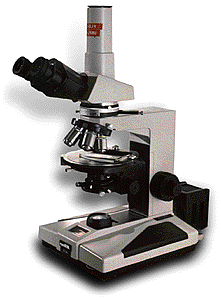

Accurate cataloguing and labelling are crucial components in our ability to give full access to the collections, to both scholarly and general audiences. The Museum therefore prides itself in providing the most accurate and up-to-date information in its exhibitions and catalogues. The material from which an object was made is a critical element of this baseline understanding, and scientific expertise often plays an important part in the provision of this information. Some examples of this work are included on these web pages, see, for example, the pages on turquoise mosaics from Mexico and Egyptian coffins. Radiocarbon dating provides an obvious link between science and the past in the minds of many but, while the Museum had a radiocarbon dating laboratory for nearly half a century (it was one of the first in the country), other approaches are necessary to determine the date of an object that is made of inorganic material. The compositions of the metal alloys and glasses in use change with time, depending upon how they were produced, and these changes allow us to determine the period when an object or material was made. The techniques used to work gemstones also changed through time, as shown in the pages on Mesopotamian cylinder seals. These types of changes can be very useful in the identification of fakes and forgeries.